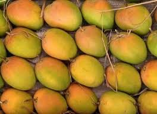
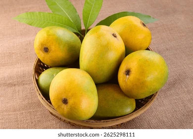
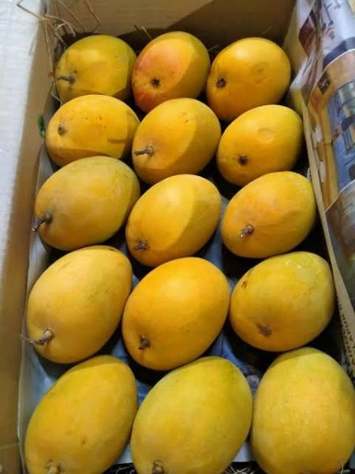

The King of Mangoes



Hapus mango, also known as Alphonso mango, is one of the most famous and premium mango varieties in India. It is mainly grown in Maharashtra and is loved for its rich taste, smooth texture, and strong aroma.
Hapus mango is mainly grown in Ratnagiri, Devgad, and Konkan regions of Maharashtra. It is considered one ofthe best export-quality mangoes in the world.
Hapus mangoes are extremely sweet, creamy, and fiberless. Their smooth pulp melts in the mouth and gives a rich tropical flavor.
• Fresh eating
• Mango milkshakes
• Ice creams
• Aamras
• Cakes and desserts
• Rich in Vitamin A and C
• Improves digestion
• Boosts immunity
• Good for skin and eyesight
Hapus mangoes are available from March to June.
⬅ Back to Home